UI Design
User interface design principles and iterative design process for Manuscripta's dual-app platform.
Design Principles
Manuscripta's interface design is informed by Nielsen's usability heuristics, reviewed as part of the HCI component of the module. Given the dual-app nature of the system and the diverse profile of the student user base the following principles were prioritised throughout the design process.
| Principle | Description |
|---|---|
| Simplicity | Interfaces minimise visual clutter and distractions. The student E-ink display shows only essential elements - content and navigation - with no colour, animation or unnecessary chrome. The teacher interface focuses on three core tasks: content generation, distribution and monitoring. |
| Consistency | Visual elements maintain predictable behaviour across both applications. Consistent typography, button styles and layout patterns reduce the learning curve and prevent confusion, particularly important for younger learners and neurodiverse users who benefit from routine and predictability. |
| Accessibility | High contrast ratios of at least 7:1 for E-ink displays, adjustable text sizes, and optional text-to-speech ensure students with varying sensory and cognitive needs can interact comfortably. Reading level adjustment supports comprehension across ability levels. |
| Feedback | Real-time feedback informs users of system status at every stage. Students receive immediate confirmation when answers are submitted. Teachers receive live progress updates and help request notifications. Loading states and confirmation messages ensure neither user is left uncertain about what the system is doing. |
| Error Tolerance | The system handles mistakes gracefully. Auto-save prevents work loss during network interruptions. Teachers can regenerate content if initial AI output does not meet their needs. Students can request help without penalty or drawing attention to themselves. |
| Privacy by Design | No data leaves the local network at any point. The interface contains no login screens, cloud sync indicators or external service integrations, reinforcing to both teachers and students that the system operates entirely within the school environment. |
Sketches
We began by constructing personas and researching accessibility needs across our target audience, which identified the following requirements guiding our initial student interface sketch:
| ID | Requirement | Rationale | How We Applied It |
|---|---|---|---|
| R1 | Alternative input methods [1] | Students with motor or physical disabilities may be unable to use a single input method reliably | The student interface supports touch and typing, with touch targets sized appropriately for users with motor difficulties |
| R2 | Adaptable cognitive levels [2] | Mixed-ability classrooms require content pitched at different reading levels simultaneously | Teachers set a per-material reading level and age group, tailoring generated materials to the needs of their students |
| R3 | High contrast [3][4] | Students with reading difficulties and autism are sensitive to visual stimuli and low contrast | The E-ink display uses a monochromatic theme with a minimum 7:1 contrast ratio, eliminating colour as a source of visual confusion |
| R4 | Self-paced progression | Timed or peer-visible progress creates anxiety for learners | The student interface shows only the current task with no visible progress indicators or peer comparison |
Student Interface Learning Page
Initial Learning Pages

After consulting Marie-Louise Holmberg (National Autistic Society) and Dan Cooper (SEN specialist) via semi-structured email questionnaires, and conducting further research, we identified the following issues and refined our sketches accordingly.
| ID | Issue Uncovered | Changes to Our Sketch | Severity |
|---|---|---|---|
| C1 | "Excessive visuals are overstimulating." 87% of autistic children show signs of over- or self-stimulation when using technology. [5] | Minimal Interface Elements, accessibility controls and reading level adjustments were removed from the student view to reduce clutter. Teachers configure these settings in advance based on individual student needs. | 2 |
| C2 | "Many autistic children fall behind in comprehension tasks due to reading deficits." Tailored reading assistance should be provided. [6] | Reading Level Controls, dual-level reading adjustment was added. Teachers set the default class reading level, while students can individually simplify text on their own devices. | 3 |
Severity ranges from 1 (lowest) to 3 (highest).
Improved Learning Pages

Teacher Interface
Our initial teacher interface sketch enabled educators to create AI-generated teaching materials, deploy lessons and monitor student progress. Drawing from our Jon Kirk persona, we recognised that teachers unfamiliar with AI tools need an interface that feels immediately straightforward, with no unnecessary complexity.
The initial design included a student dashboard, a lesson creation text box and an analytics tab for performance monitoring. Following stakeholder consultation, we identified several usability issues and refined the design accordingly.
Initial Sketches

| ID | Issue Uncovered | Changes to Our Sketch | Severity |
|---|---|---|---|
| C3 | The layout was easy to understand but lacked clear guidance for new users. | Clear Navigation and Onboarding, tabs were renamed more descriptively and structured onboarding prompts were added for first-time users. An AI assistant was also introduced to provide real-time help if needed. | 1 |
| C4 | The purpose and expected input for the large "lesson plan" text box was not immediately clear. Teachers were unsure what to input. | Structured Lesson Input Fields, the ambiguous text box was replaced with clearly labelled fields - title, subject, base content and preview - guiding teachers step by step through the content creation process. | 3 |
| C5 | No mechanism existed for teachers to set reading levels for the whole class at once. | Reading Level Controls, a class-wide age group slider was added to the teacher interface, allowing teachers to set the default reading level for all distributed content. | 2 |
Severity ranges from 1 (lowest) to 3 (highest).
Improved Sketch

Initial Prototype
We translated our sketches into a digital interactive prototype using Google's AI Studio to generate basic React Typescript frontends. These simulated both the student and teacher interfaces, and were shared with clients via follow-up email and during design review calls to validate our design decisions and identify remaining usability issues.
You can explore the initial prototypes here: Teacher Interface Prototype / Student Interface Prototype
Initial Prototypes

Prototype Evaluation against Nielsen's Heuristics
What Worked Well
| Heuristic | Observation |
|---|---|
| Aesthetic and Minimalist Design | The monochromatic layout reduced visual noise effectively, keeping the interface calm and focused for all students |
| Match Between System and Real World | The worksheet and quiz formats mapped directly to materials teachers already use in the classroom, reducing the learning curve |
| Error Prevention | Auto-save prevented work loss during network drops, removing a significant source of anxiety for both teachers and students |
Issues Identified
| ID | Heuristic | Issue Identified | Client Feedback | Changes Made | Severity |
|---|---|---|---|---|---|
| C6 | User Control and Freedom | No mechanism for teachers to regain student attention once content was distributed | "Ability to lock tablets to get students' attention when needed." | Classroom Attention Management, a Lock All Screens button was added for one-click control during instruction | 3 |
| C7 | Consistency and Standards | Content was not organised hierarchically — units and lessons were treated as flat items | "Can we structure content as Units containing Lessons?" | Hierarchical Content Organisation, teachers can now specify unit and lesson numbers when creating content, then select and deploy via organised dropdowns | 2 |
| C8 | Flexibility and Efficiency of Use | Students had to navigate away from lesson content to access quiz questions | "It would be nice if students could easily switch between lesson and quiz." | Seamless Navigation between Materials, a quick toggle was added allowing students to switch between lesson content and quiz questions without navigating away | 2 |
Severity ranges from 1 (lowest) to 3 (highest).
Improved Prototype
Following the initial prototype evaluation, a second iteration was produced incorporating C6 through C8. A final round of feedback was gathered from personal contacts in the educational sector.
Teacher Interface
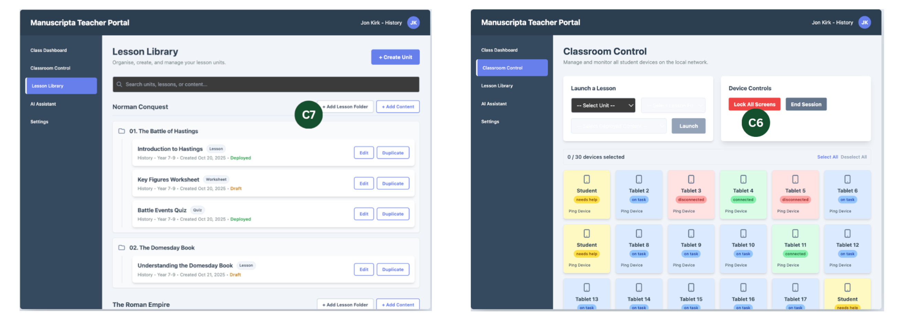
Student Interface

Evaluation
| Heuristic | Issue Identified | Changes Made | Severity |
|---|---|---|---|
| Visibility of System Status | Student statuses shown with small coloured labels were difficult to read at a glance | The entire student block is now colour-coded to represent status - on task, needs help, or disconnected | 2 |
| Consistency and Standards | Terms such as lesson, quiz and worksheet were ambiguous to new users | Labels and terminology were clarified throughout both interfaces | 2 |
| Flexibility and Efficiency of Use | Lesson plans and teaching materials lacked optional numbering for organisation | Numbering was made optional when creating content | 1 |
Final UI
The final interface evolved from our prototypes primarily through aesthetic refinement on the teacher side and functional simplification on the student side. Both applications adopt a modern, scholarly design language: pairing the Fraunces serif typeface for headings with IBM Plex Sans for body text, set against a muted palette of brand green, warm orange accents and soft cream backgrounds.
Teacher Portal
The teacher portal received primarily aesthetic updates, bringing the interface in line with the project's visual identity. The layout is organised into four core sections - Library, Classroom, Responses and Settings - each accessible from a persistent sidebar. The design prioritises clarity and efficiency, ensuring teachers can generate, manage and distribute content without navigating unnecessary complexity. The website itself mirrors the teacher portal's visual language, maintaining consistency across the project.
Library
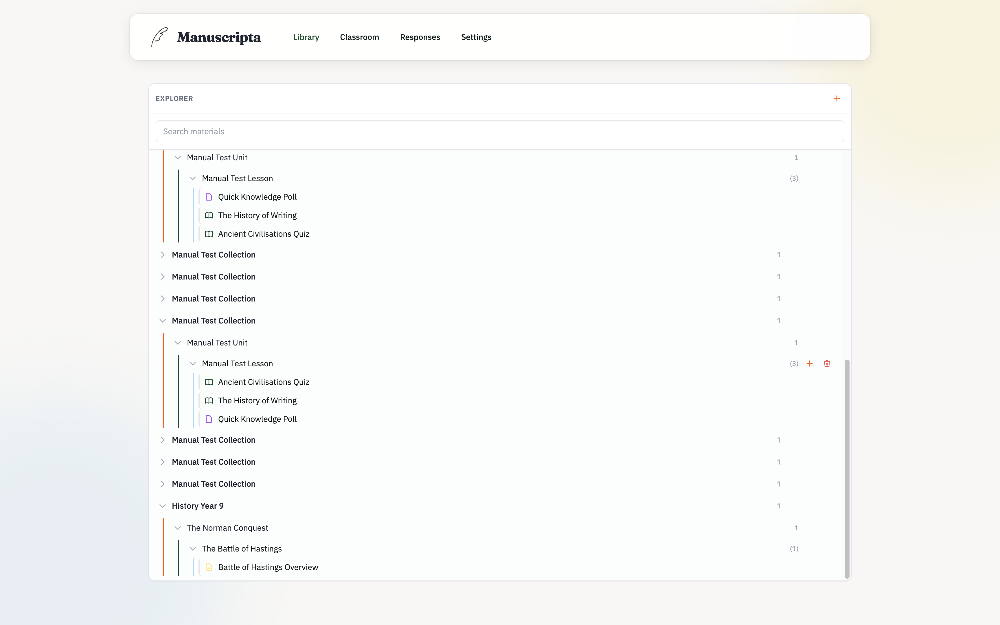
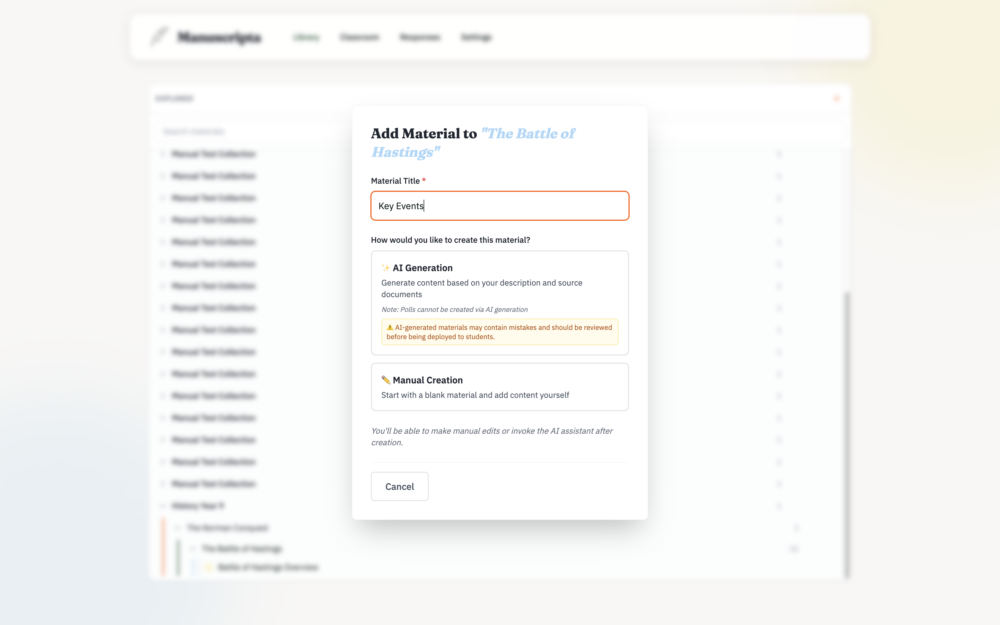
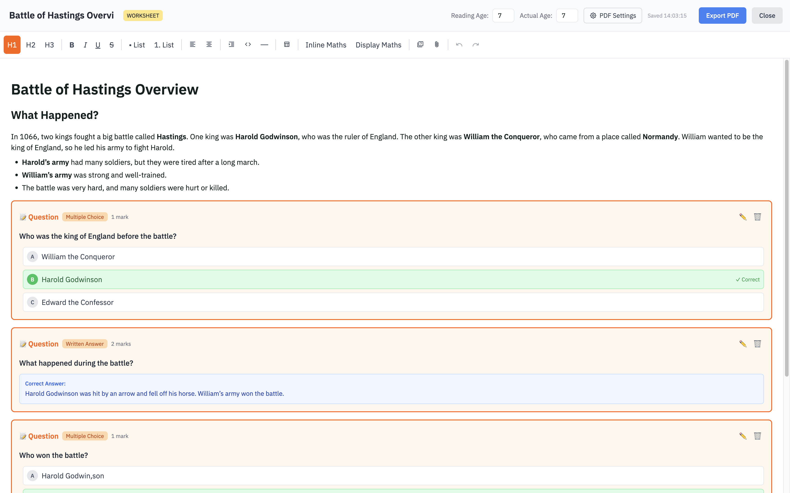
Classroom
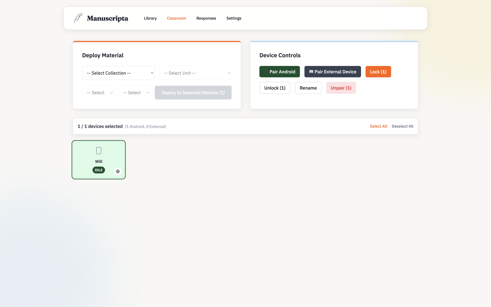
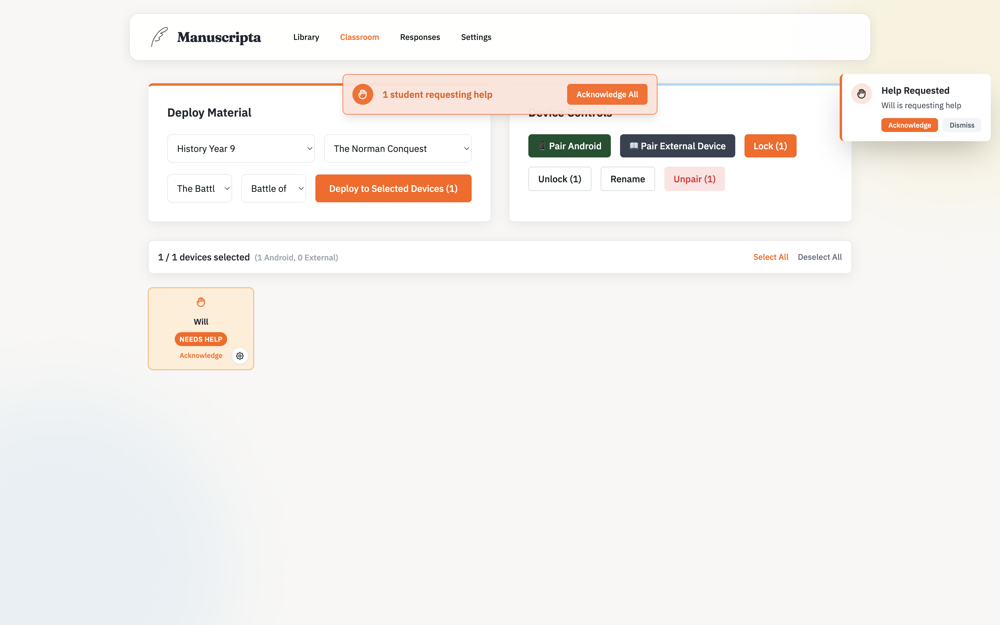
Responses
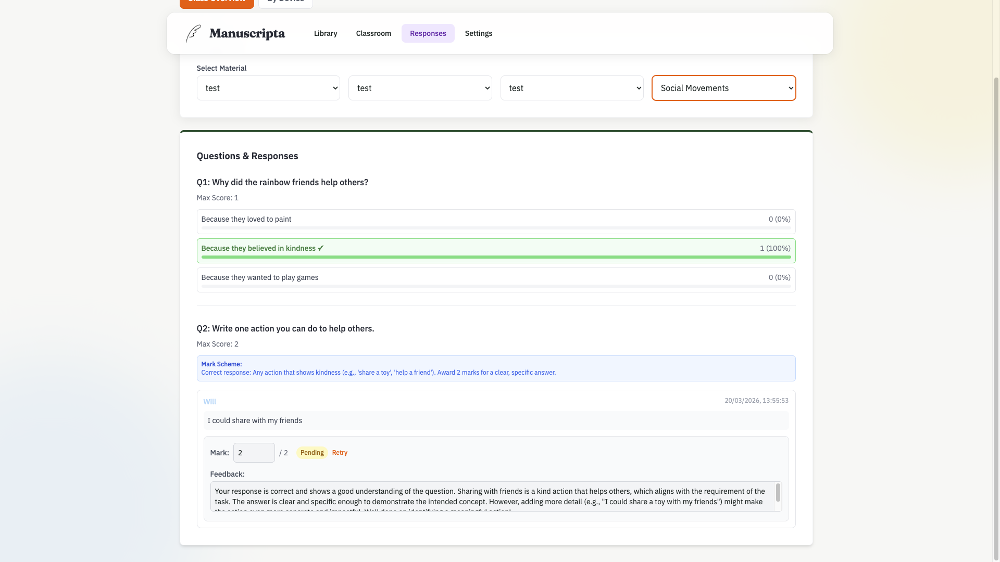
Settings
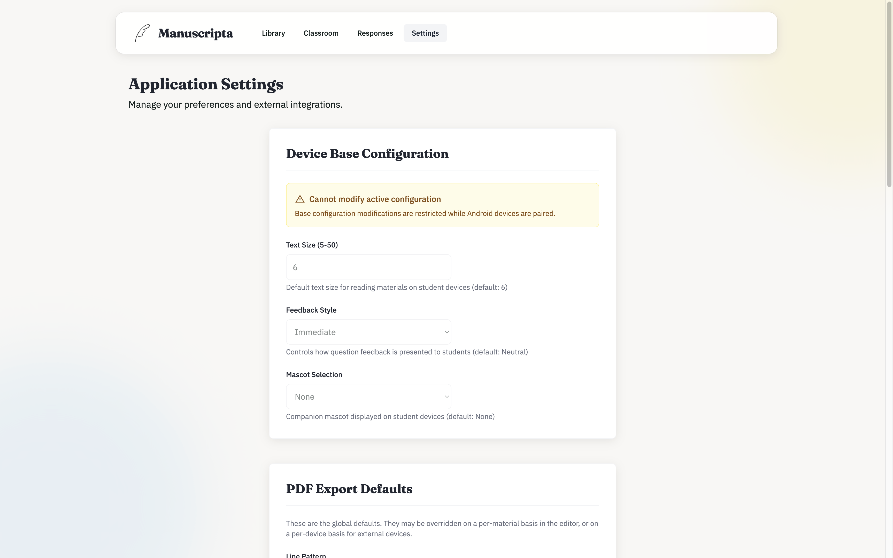
Student Device
The student interface retains the minimal, distraction-free character of the prototype but introduces key functional changes. The tabbed navigation was replaced with a dropdown selector, allowing students to scroll through and select any material, worksheet or feedback item. This allows the number of items on device to now grow dynamically. At the bottom of the screen, a persistent Raise Hand button allows students to silently request help at any time, while a Submit Answer button appears contextually when a worksheet is active. The simplify, expand and summarise buttons from the prototype were removed as those features were descoped from the final build.
Pairing Screen
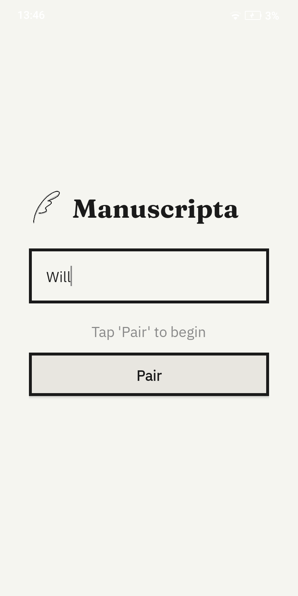
Idle Paired State
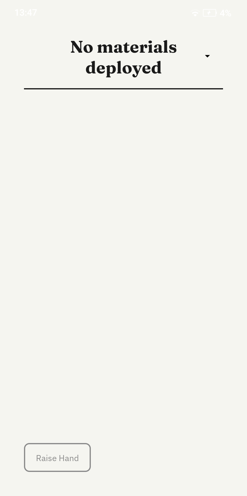
Reading Material
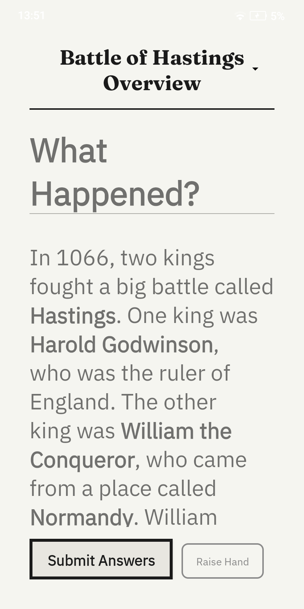
Worksheet Material

Dropdown Material Selector
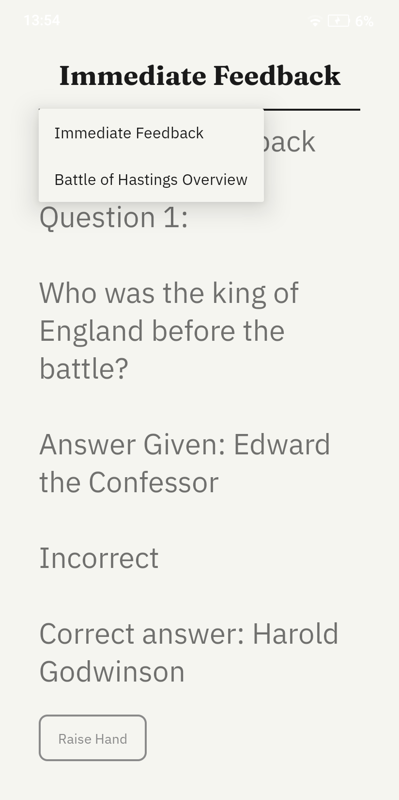
Teacher Response Feedback
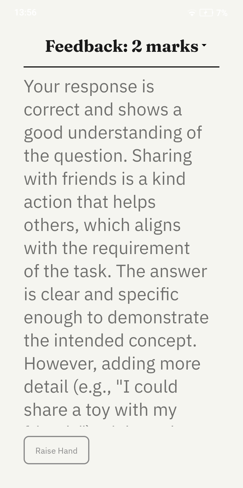
Citations
- Findlater and Zhang, "Input Accessibility," ASSETS, ACM, 2020.
- Barrientos, "Institutionalization of Adapted Books," AIDE Interdisciplinary Research Journal, 2023.
- Shuffrey et al., "Visually Evoked Response Differences," Brain Sciences, 2018.
- Martin and Wilkins, "Creating Visually Appropriate Classroom Environments," Intervention in School and Clinic, 2021.
- Alarcon-Licona and Loke, "Autistic Children's Use of Technology and Media," IDC, ACM, 2017.
- Nally et al., "An Analysis of Reading Abilities in Children with Autism Spectrum Disorders," Research in Autism Spectrum Disorders, 2018.